The Performance — Est. 2016
ВидетьиначеИнститутГоворитьубедительноКультуры
влияния
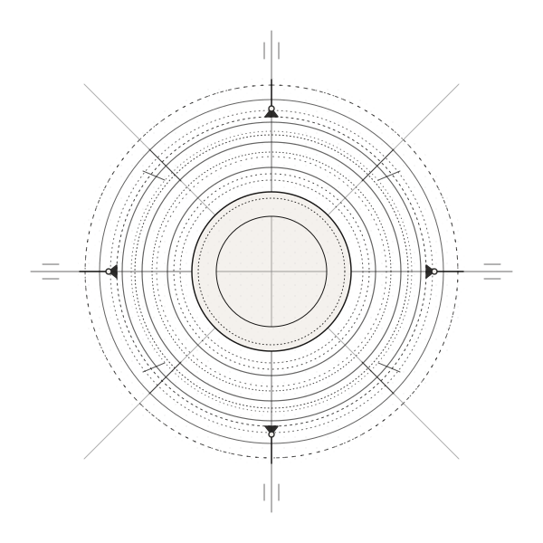
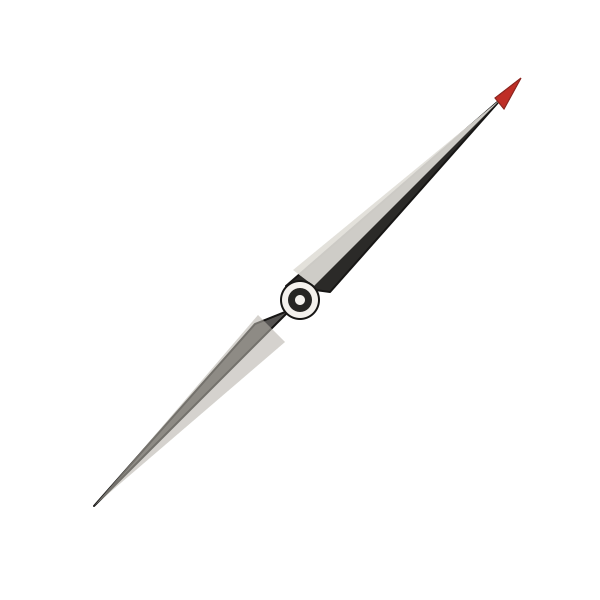
The Performance — Est. 2016


мысль
Развивать способность видеть суть, формулировать позицию и выстраивать логику мысли.
Превращать мысль в слово, которое создаёт понимание, доверие и побуждает к действию.
Управлять собственным вниманием и присутствием, чувствовать контекст и менять качество коммуникации.
Принципы не изучаются порознь: каждая программа института работает со всеми тремя — от мысли к слову, от слова к влиянию.
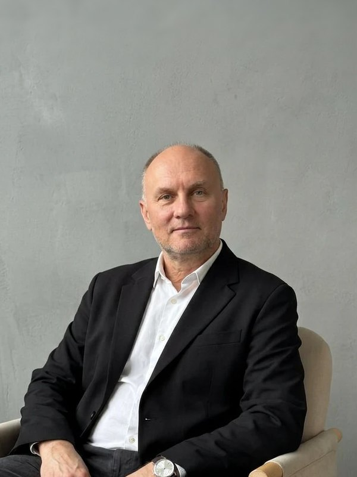
Генеральный директорПсихофизика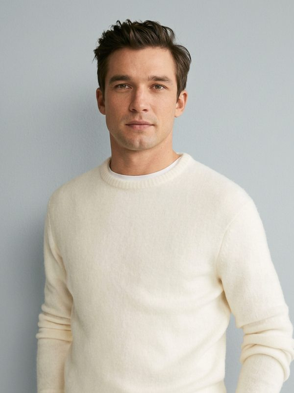
ПредпринимательЛогика речи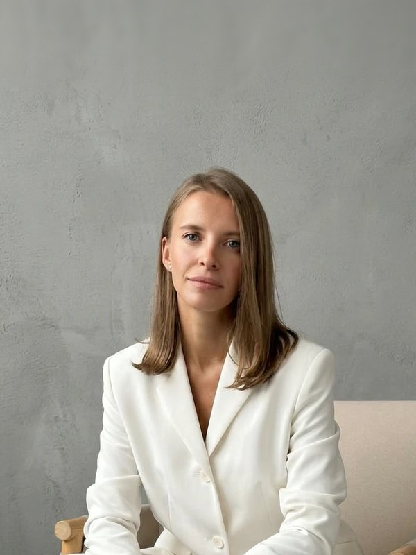
Руководитель направленияГолос и речь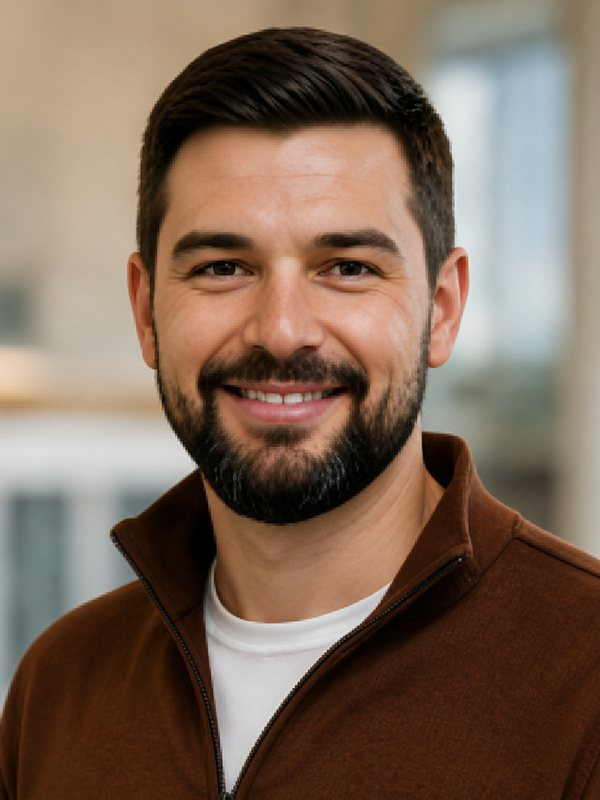
ЛекторКреатив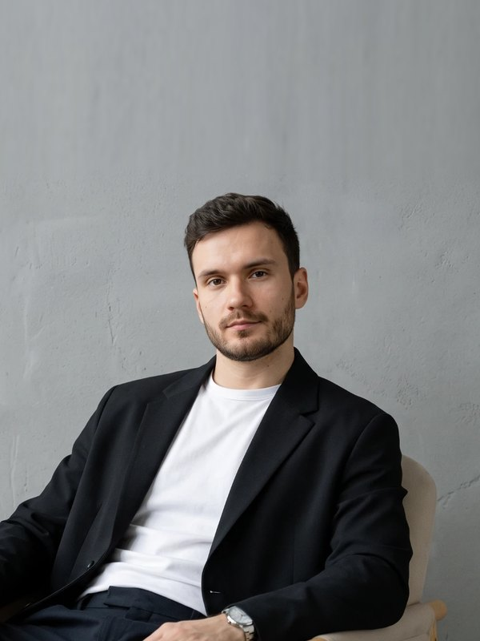
АрхитекторАктёрское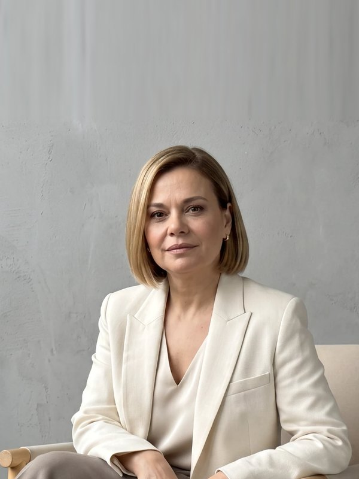
Партнёр юридической фирмыЛогика речи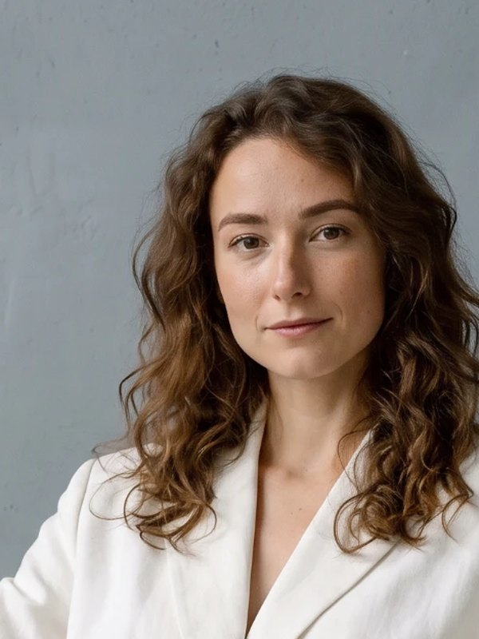
ВрачГолос и речь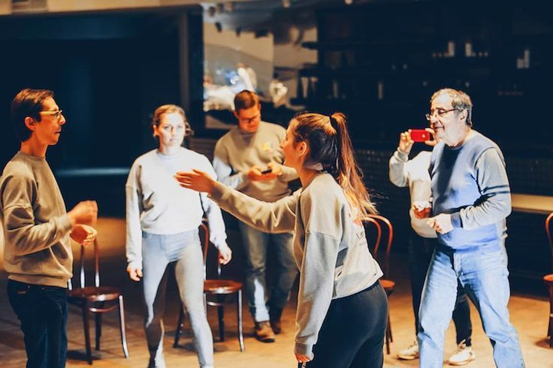
Мастер-класс Психофизика влияния1 вечер · 19:00IIПсихофизика
Психофизика влияниястарт 29 октября
Практикум по актёрскому мастерству: один вечер, чтобы почувствовать присутствие.
1 вечердлительность29 октябрянабор25 000 ₽стоимость
25 000 ₽Записаться
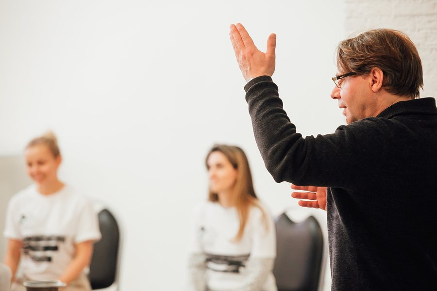
Мастерская Голос и речьот 5 недель · 5 ч/недIМысль и слово
Голос и речьнабор в ноябре
Дыхание, тембр, дикция: голос, который держит внимание без усилия.
от 5 недельдлительностьв ноябренаборпо запросустоимость
стоимость после встречи с продюсеромЗаписаться
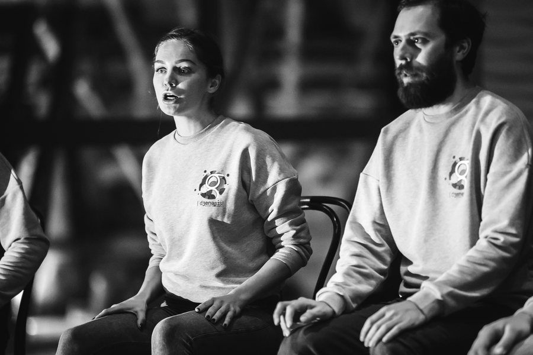
Онлайн Логика речи и сторителлинг5–12 недель · 5 ч/недIМысль и слово
Логика речи и сторителлингнабор в ноябре
Структура мысли и история, которую слушают до конца. Занятия в Zoom.
5–12 недельдлительностьв ноябренаборпо запросустоимость
стоимость после встречи с продюсеромЗаписаться
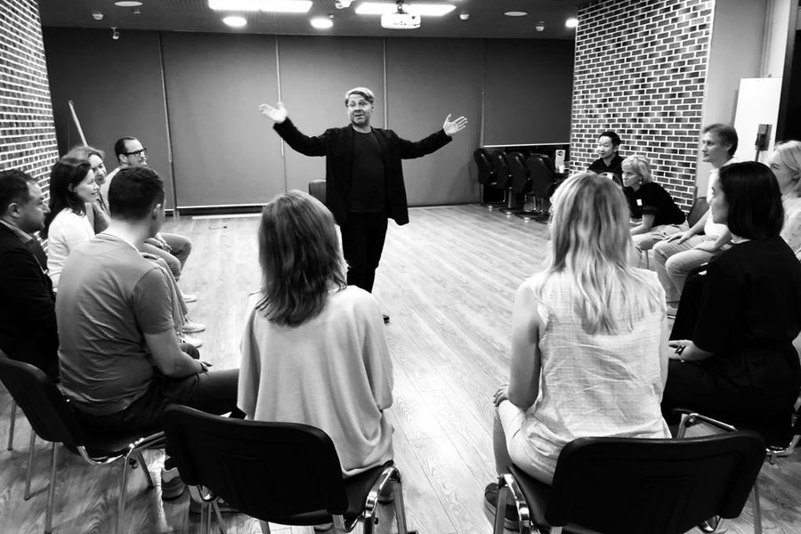
Программа Психофизика лидерадо 3 месяцев · с 19:30IIПсихофизика
Психофизика лидеранабор в ноябре
Школа Станиславского для руководителя: тело, внимание, присутствие.
до 3 месяцевдлительностьв ноябренаборпо запросустоимость
стоимость после встречи с продюсеромЗаписаться
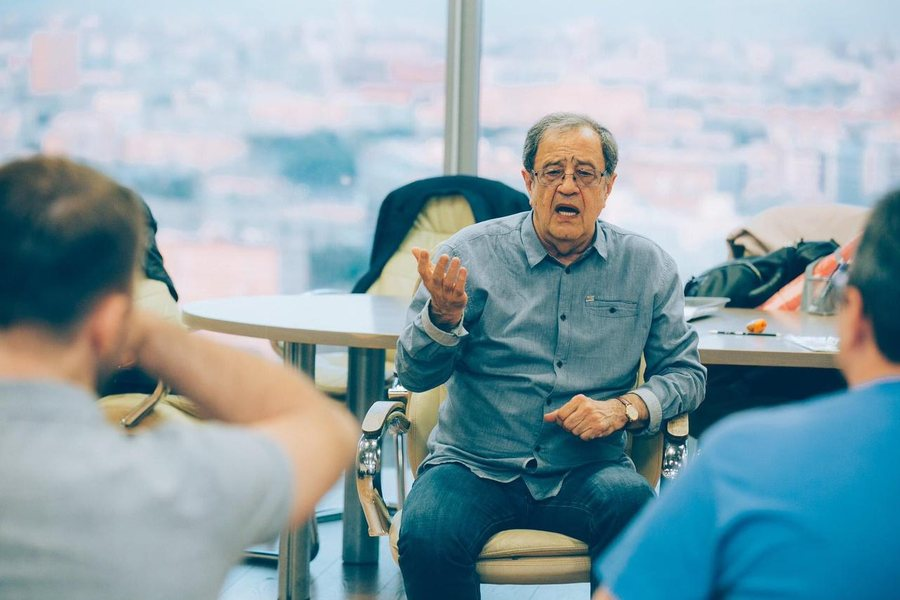
Программа Корпоративная программа≈100 часов · модульноIIIЛидерство
Корпоративная программанабор открыт
Публичные выступления и деловые коммуникации для команды, под задачи компании.
≈100 часовдлительностьоткрытнаборпо запросустоимость
стоимость после встречи с продюсеромЗаписаться
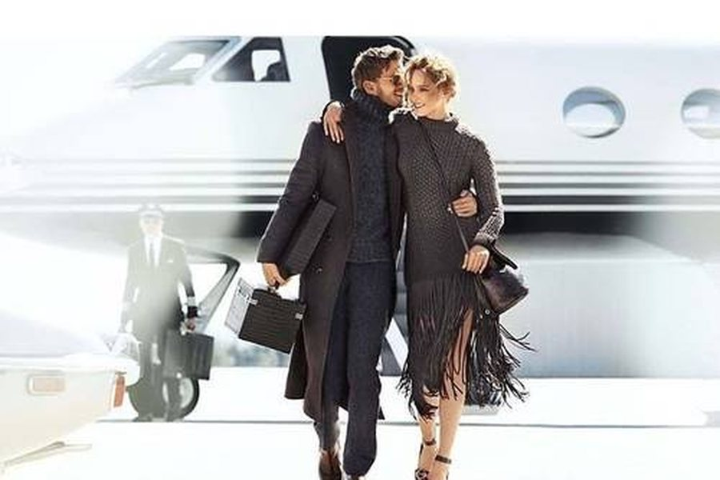
Индивидуально Публичная роль руководителяIIIЛидерство
Публичная роль руководителянабор открыт
Индивидуальная работа над стратегическими выступлениями и лидерской коммуникацией.
длительностьоткрытнаборпо запросустоимость
стоимость после встречи с продюсеромЗаписаться
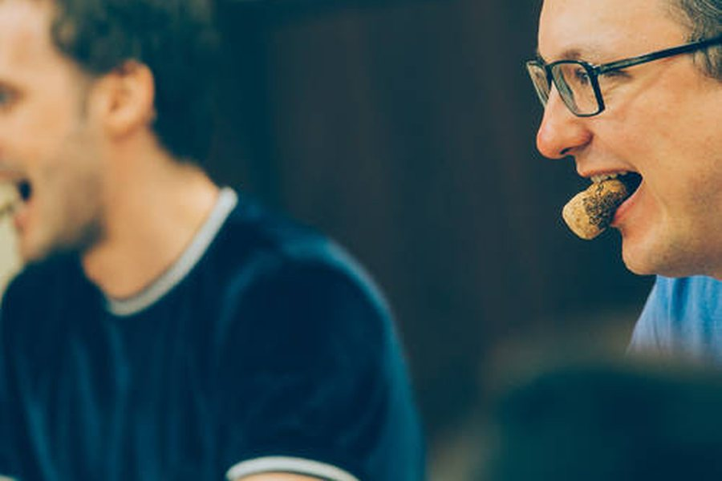
Мастерская Креативное мышлениеот 5 недельIМысль и слово
Креативное мышлениенабор в декабре
Нестандартные решения и импровизация в мысли — до того, как она станет словом.
от 5 недельдлительностьв декабренаборпо запросустоимость
стоимость после встречи с продюсеромЗаписаться
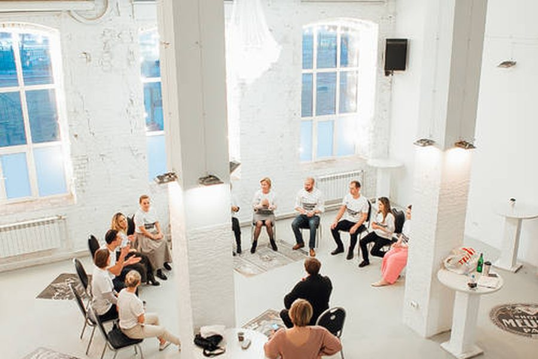
Мастерская Актёрское мастерствоот 5 недельIIПсихофизика
Актёрское мастерствонабор в декабре
Контакт, импровизация и поведение в сложных коммуникациях через актёрский тренинг.
от 5 недельдлительностьв декабренаборпо запросустоимость
стоимость после встречи с продюсеромЗаписаться
По этим условиям наборов сейчас нет. Снимите часть фильтров или напишите нам — подберём программу.
Стоимость и зачисление — после 30-минутной встречи с продюсером.
Философский клуб — закрытое сообщество
Закрытые встречи, ужины, дискуссии, интеллектуальные путешествия.
контекстов дискуссий: философия, культура, бизнес, наука, общество, лидерство
участники — люди действия из среды института; вход после знакомства
Натали Дюваль — основатель института
Слово как манифест личности
Если вам близка философия ПЕРФОРМАНС, напишите нам.
Расскажите о себе и сформулируйте свой запрос. Большинство программ доступны после знакомства и собеседования.
Запросить участие